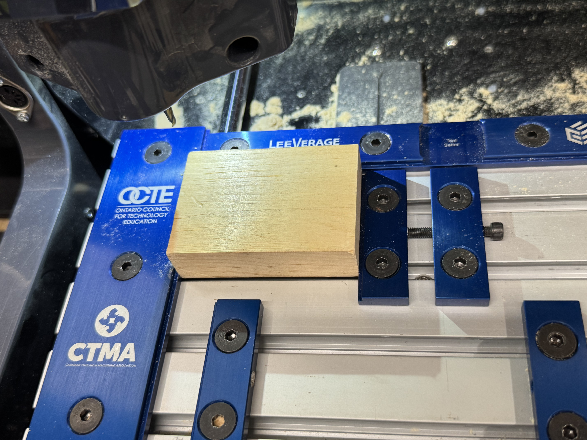

Process
- Mount the stock securely in the CNC machine.
- Release the E-stop, reset the machine, and set the limit switches.
- Set the X, Y, and Z zero points.
- Perform the facing operation to create a flat surface.
- Create the profile of the block using conversational programming.
- Machine the pocket feature to the required dimensions.
- Import and adjust the engraving design by scaling and rotating it.
- Run the engraving operation and inspect the finished CNC block.